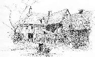
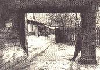
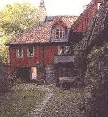
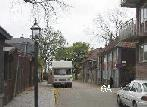
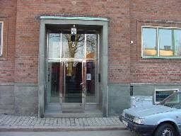
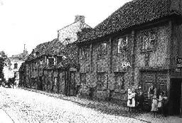

|
      |
Trots smärre förändringar och ombyggnader utgör gården ett gott exempel på den trähusbebyggelse som alltifrån 1600-talets senare del präglat stadens malmar. Huvudbyggnaden utgörs av en rektangulär tvåvånings huskropp längs gatan, med överbyggd inkörsportgång. Under senare delen av 1700-talet sammanbyggdes två friliggande hus med gathusets köksflygel. Under 1800-talet inreddes husens vindar. De äldsta säkra uppgifterna om dem som bott i husen härrör från 1730 års mantalslängd. Gården ägdes då av skepparen och borgaren Johan Holmberg. Denne bodde med sin hustru i tre rum i gathusets bottenvåning. Övervåningens fyra rum hyrdes ut till kapellisten Gudensvager och köket till en gardesänka och hennes två barn. I de två stugorna på gården bodde ytterligare sex familjer om totalt 16 personer.
Per Anders Fogelström har berättat att i det här huset bodde vid 1900-talets början en målarmästare R. W. Gustafsson. Dennes son Amandus Gustafsson har i en postumt utgiven skrift, Jag berättar för mina barn, skildrat familjens bostad: Först kom man in i en liten förstuga och därefter in i det enda rummet, där takbjälkarna vara synliga och satt så lågt att man kunde ta i dem. Innanför rummet låg köket och där bodde Robert (brodern) och jag. Halva utrymmet upptogs av en däri inmurad järnspis överskuggad av en kolossal murad spiskupa. Varken vattenledning eller avlopp fanns. Det sistnämnda ordnades med att slå ut hinken på gatan alldeles utanför porten och vatten fick man hämta i 11-ans port mitt över gatan. Det går ju nästan till på samma sätt än idag i den lilla kåken så i det fallet har tiden stått stilla. Vedbod och dass låg ihop i ett uthus där stora råttor snodde omkring benen. Var gång man nödgades gå dit sparkade man i dörren och slängde in ett par vedträn inåt mörkret för att jaga bort odjuren. Men den lilla trädgårdstäppan var vacker och trevlig på sommaren, även om man fick bära vatten lång väg för vattningen av blommorna. Ur Ett berg vid vattnet, Per-Anders Fogelström, 1969 Amandus Gustafsons måleriverksamhet var av liten omfattning och man levde i hög grad på hustruns arbete, hon sydde "billiga konfektionskläder till fullkomliga svältpriser" - långa herrkalsonger för 85 öre till 1: 25 per dussin, sjömanskostymer för småpojkar för 12 kronor dussinet etc. Familjens pojkar bar sedan de färdigsydda kläderna till beställaren, frakten betalades med två öre per dussin plagg. I trädgården till sexan fanns ett lusthus och i det satt Amandus Gustafson och räknade fram sitt första stora anbud som egen målarmästare, ett arbete som han också fick - att måla det nybyggda Stadion. I trädgården firades den unge målarmästarens förlovning med ett stort kalas i augusti 1910. Senare kom Gustafson att köpa in flera av husen intill och bygga ett stort eget hus i hörnet av Glasgränd och f.d. Fjällgatan, Mäster Mikaels gata 6 (arkitekt Björn Hedvall, 1936). Tidigare hade han låtit bygga på och renovera hörnhuset mot Nytorgsgatan (Mäster Mikaels gata 4 ). Den gamla dragkärran på vilken målarmästaren själv dragit omkring sina pytsar och penslar hade då för länge sedan bytts ut mot lastbilar. Liksom det förr fanns en stentolva och en trätolva finns alltså nu en stensexa och en träsexa på varsin sida om den lilla Glasgränden. Trähusraden 6-10 hoppas man ska bevaras som kulturreservat liksom det lilla renoverade huset Sandbacksgatan 7 i samma kvarter. Den klassiska utsikten över f.d. Stigbergsgatan mot Katarina kyrka, välkänd från bl.a. dussintals julkort, har däremot tyvärr förstörts sedan flera av husen nedanför sjuan fått förfalla alltför mycket och till sist rivits.
|
{kind=link}
{kind=link}